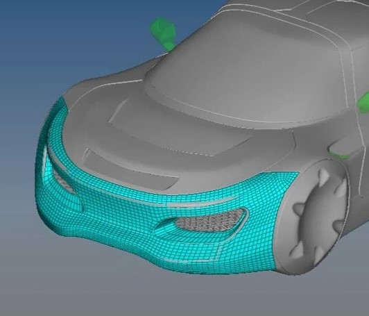
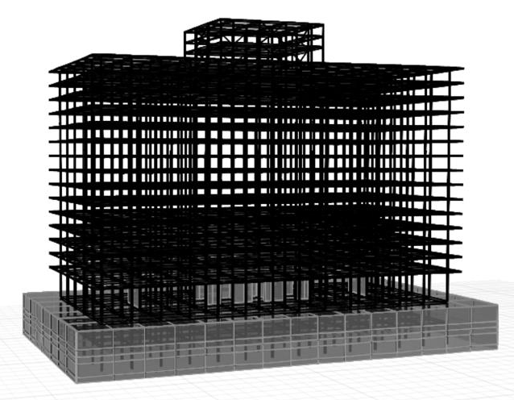

Project Pages & Posts
-

Mesh Rebuild Tool Performance Improvement
Our recent development related to the performance of the mesh "Rebuild" tool was released in HyperMesh 2023.
Wed 20/Oct/2023
-
Structural Control and Health Monitoring Paper Available Online
Our recent work is now available online in Structural Control and Health Monitoring.
DOI: 10.1002/stc.2870.
Tue 18/Oct/2021
-
Earthquake Spectra Paper Available Online
Our recent work is now available online in Earthquake Spectra.
DOI: 10.1177/87552930211003916.
Wed 28/Apr/2021
-
SCEC2020 Poster Archive Now Available
The SCEC2020 Archive of our poster is now available. The poster includes our study of the correlation of the observations with basement depth and Vs30, as well as a comparison of the data with 3D finite difference simulations predictions.
Mon 12/Oct/2020
-
Wired Article
Our Ridgecrest earthquake sequence Seismological Research Letters paper was featured on Wired.
Mon 12/Oct/2020
-

Animations from the 2019 M7.1 Ridgecrest Earthquake
Movies of the ground velocities and ground displacements in urban Los Angeles during the strong motion part of the Mw7.1 2019 Ridgecrest earthquake.
Fri 24/Jan/2020
-
Los Angeles Downtown Highrises Ridgecrest Amplification
We calculate the ground-motion amplification factors in urban Los-Angeles. Acceleration measurements from the main M7.1 2019 Ridgecrest earthquake are used. The Los Angeles downtown hig-rise building could had experienced a much higher amplification if located just a few blocks to the south.
Sat 11/Jan/2020
-

IWSHM2019 Proceedings: Identification of Sparse Damage in Steel-Frame Buildings Using Dense Seismic Array Measurements
L1 regularization and sparse Bayesian learning techniques are developed and tested for their effectiveness for identifying the location and size of damage in buildings. Encouraging results are obtained by applying the methods to selected types of linear and nonlinear building models and damage scenarios using simulated acceleration response time histories. Part of my presentation in the 12th International Workshop on Structural Health Monitoring (IWSHM2019).
Fri 20/Dec/2019